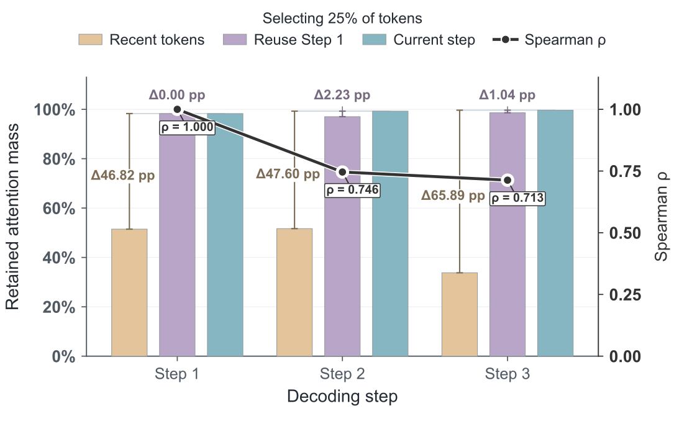
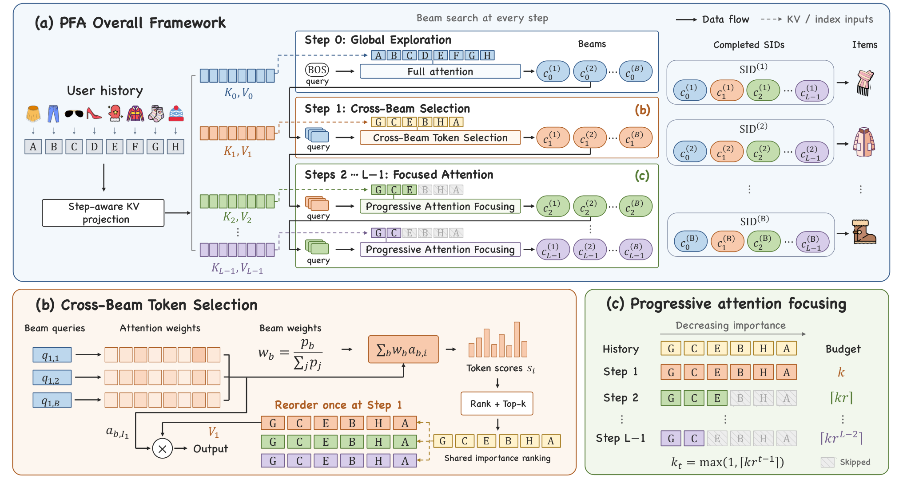

Contents · 10 sections
1What problem is it actually solving?2Two observations: attention narrows, and the ranking holds3The pipeline: look at everything once, select once, then trim4Why pool all beams' opinions at step 1?5Why shrink the budget at every step?6Why a separate KV for each step?7Experiments: how much faster, how much more accurate8Where I think it falls short9How a recommendation or search team could try it10VerdictSHARE
The authors at Alibaba found that when a generative recommender decodes with beam search, attention concentrates on a few past behaviors as decoding proceeds, and which behaviors matter stays largely the same from step to step. Building on this, PFA (Progressively Focused Attention) turns "every beam picks important history at every step" into picking once for the whole decode. Before, every beam at every step computed attention over the whole user history, so longer histories meant slower serving. PFA looks at the full history only at the start of decoding. After that, the beams' attention is pooled, weighted by each beam's generation probability, into one ranking of important behaviors shared by all beams, and those behaviors' KV cache is moved into contiguous memory. At each later step the number of kept behaviors shrinks by a fixed ratio, for example by half per step. The important behaviors can be found early, so there is no need to reselect them at every step. In an online A/B test on an e-commerce ads platform, the user history grew from 128 to 512 behaviors, revenue rose 3.76%, and response time stayed below that of feeding all 512 behaviors directly. Generative retrieval teams held back by long-sequence inference latency should read it.
What problem is it actually solving?
Take an illustrative case. A user has 512 past clicks, and generative retrieval has to produce 100 candidate items for them. Each item is a 4-code SID, so beam search runs 4 steps and keeps 100 beams at each step. At every step, every beam uses its current query to compute attention against all 512 behaviors.
| Illustrative | History seen per step | Who selects | How history KV is read |
|---|---|---|---|
| Full attention | 512 | No selection | Every beam reads all 512 |
| Dynamic top-k | 256 | Each beam, every step | 256 entries scattered across memory |
| PFA | Step 0: 512; step 1: scores all 512, uses the top 256; steps 2 and 3: 128 and 64 | Once, at step 1 | The first entries of a reordered, contiguous cache |
Full attention cost grows linearly with history length. The paper measures that a 4x longer history makes inference latency 2.46 times as long.
The two existing families each have a weakness. The first compresses the history before decoding: LONGER (a long-sequence model that merges a long history into a few tokens) and Q-Former squeeze 512 behaviors into fewer vectors. The compression happens once, regardless of the decoding step, so a detail some later step needs may already be gone for good. The second is dynamic top-k: at every step, each beam uses its own query to pick the k most relevant behaviors from the full history and attends only to those. It adapts step by step, but under beam search it loses. A hundred beams each select separately, so selection itself is overhead, and the chosen KV entries sit scattered across GPU memory, which makes reading them slow. In the paper's ablation, dynamic top-k is 2.36 times slower than full attention on the industrial dataset. It saves compute but takes more time.
Two observations: attention narrows, and the ranking holds
PFA starts from two statistics plots on the industrial dataset.

The first observation is that attention narrows step by step. At step 0 nothing has been generated yet and the query comes only from the start token, so attention is spread wide. Once the first code is generated, attention pulls in quickly: from step 1 on, the top 10% of behaviors take 92.98% of the attention weight. This matches intuition. The first code fixes a broad category, say sports gear, and later codes refine within it, so fewer behaviors are needed.

The second observation is that the ranking is stable. Pick the top 25% of behaviors by weight at step 1 and simply keep them at steps 2 and 3: they still hold 97.03% and 98.62% of the weight, only 2.23 and 1.04 points less than reselecting at every step. Taking just the most recent 25% instead loses 47.60 and 65.89 points. So "most recent means most important" fails here, while "important at step 1 means important later" largely holds. For this set of behaviors, the Spearman correlation between the step-1 ranking and the step-2 and step-3 rankings is 0.746 and 0.713, which means the order is broadly kept but not identical.
Together the two observations give PFA's design: since later steps need less history, the budget should shrink; since the ranking is stable, selecting once is enough.
The pipeline: look at everything once, select once, then trim

| Stage | Decoding step | What happens | Output |
|---|---|---|---|
| Preparation | Before decoding | The encoder encodes history; a separate KV projection is computed for each step | 4 history KV sets |
| Global exploration | Step 0 | The start-token query attends to the full history | First code, top 100 beams |
| Cross-beam selection | Step 1 | Attention is pooled across beams into one shared ranking; the top k are kept | Reordered contiguous KV cache |
| Progressive trimming | Step 2 onward | Each beam attends only to the first k_t entries of the cache | Remaining codes |
The key split: steps 0 and 1 explore and score over the full history to keep as many of the user's interests as possible; after step 1 the model computes only over a few important behaviors. Now the parts one by one.
Why pool all beams' opinions at step 1?
At step 1 the 100 beams have each generated a different first code, standing for different directions of the user's interests. One beam might head toward running shoes, another toward coffee. Each beam computes attention with its own query against the full history, giving a weight for every behavior. With multiple heads, the weights are averaged across heads.
PFA then gives each beam a share: its generation probability divided by the sum over all beams. A behavior's importance score is the sum of the weights the beams give it, each scaled by that beam's share:
Here is the attention weight beam gives behavior , is beam 's generation probability, and is behavior 's overall importance. The intuition: directions more likely to be recommended get more say.
A worked example (illustrative). Two beams with generation probabilities 0.6 and 0.2 get shares 0.75 and 0.25. Behavior A has weights 0.4 and 0.0 in the two beams; behavior B has 0.1 and 0.6. A scores 0.75×0.4=0.30, and B scores 0.75×0.1+0.25×0.6=0.225. A ranks above B, but B still scores fairly high because it matters to the second beam, so it is not simply thrown away.
Why not let each beam select for itself? The ablation answers this. With a separate ranking per beam, Recall@10 is slightly higher, but latency rises from 62 to 118 ms per batch. One shared ranking trades a sliver of accuracy for about half the time.
After picking the top k, PFA reorders the history KV used by later steps by this ranking, keeps only the top k, and lays them out in one contiguous block of memory shared by all beams. Step 1 itself is not recomputed: the attention weights already computed are kept only for those k behaviors, renormalized to sum to 1, and used to weight the matching values to get the output. Hoot says

Swipe or use the arrows for the three steps. PFA's contribution is making generative recommendation focus more as decoding proceeds, reading less of a long history. At step 1 every beam has attention weights over the full history; PFA merges them, weighted by beam share, into one shared ranking. All numbers are illustrative. Source: illustrative example of the paper's §3 step-1 reuse and later steps
Why shrink the budget at every step?
The k selected behaviors are already sorted from most to least important, so each later step only needs to decide how many to take from the front. PFA's budget formula is:
is the number kept at step 1 and is the fraction kept per step. With the defaults and , step 1 scores the full history but uses only the top 256 for its output, and steps 2 and 3 halve the budget each time, seeing only the top 128 and the top 64.
The payoff is in memory access. The history seen at each step is a prefix of the previous step's, so taking the first 128 means reading 128 entries from the start of contiguous memory, with no index-based gathering. The paper calls this zero-overhead prefix truncation. Without the shrinking, keeping 256 at every step, Recall@10 barely changes and latency goes from 62 to 65 ms per batch. This part gains little because a 4-code SID leaves only a couple of steps to shrink.
Why a separate KV for each step?
After trimming, later steps look at subsets of the same behaviors. But each step predicts a different code: the first fixes the broad category, the last tells individual items apart, so different information has to be read from the same behavior. PFA gives every decoding step its own KV projection parameters and computes all 4 history KV sets before decoding. The same behavior thus shows a different side at each step.
This is the part of PFA that matters most for accuracy. With one shared projection for all steps, Recall@10 on the industrial dataset falls from 0.1695 to 0.1602, below full attention's 0.1643, while latency drops by only 3 ms per batch.
Experiments: how much faster, how much more accurate
Start with theoretical compute. Under the default setting, PFA's attention multiply-accumulates are a little over a third of full attention's, a theoretical 2.65x speedup, and 1.99x over dynamic top-k. The paper attributes the gain to two things: all beams and all later steps share one ranking, so selection is not repeated; and the budget shrinks, so less history is read over time.
The main experiment compares against 8 baselines on three datasets: Kindle Store (e-books), Tmall (e-commerce clicks), and an industrial ads dataset with about 35 million users and a history length of 512. The table shows the industrial results.
| Method | Recall@10 | NDCG@10 |
|---|---|---|
| TIGER (standard generative recommender, full history) | 0.1332 | 0.0722 |
| LONGER (compresses history before decoding) | 0.1565 | 0.0928 |
| GEMs (long-sequence generative recommender, strongest baseline) | 0.1581 | 0.0947 |
| PFA | 0.1695 | 0.1021 |
PFA is first on all four metrics on all three datasets. Against the strongest baseline per metric, it averages 5.75% higher Recall@10 and 7.18% higher NDCG@10. Looking at everything first and then selecting keeps useful history better than compressing before decoding.
The ablation is clearer with accuracy and latency side by side (latency in ms per batch on L20 GPUs, 512 users per batch).
| Variant | Kindle Recall@10 | Kindle latency | Industrial Recall@10 | Industrial latency |
|---|---|---|---|---|
| Full attention | 0.0624 | 24 | 0.1643 | 90 |
| Dynamic top-k | 0.0623 | 53 | 0.1638 | 212 |
| No cross-beam sharing | 0.0648 | 29 | 0.1706 | 118 |
| No budget shrinking | 0.0637 | 20 | 0.1699 | 65 |
| No per-step KV projection | 0.0618 | 16 | 0.1602 | 59 |
| PFA | 0.0635 | 18 | 0.1695 | 62 |
Compared with full attention, PFA is 1.45x faster on the industrial dataset with 3.16% higher Recall@10. The division of labor is clear: cross-beam sharing and budget shrinking mainly save time with almost no accuracy cost, while per-step KV projection mainly drives accuracy.
The paper also tests when to build the ranking (industrial dataset, latency in ms per batch):
| Build the ranking at | Step 0 | Step 1 (default) | Step 2 | Step 3 |
|---|---|---|---|---|
| Recall@10 | 0.1632 | 0.1695 | 0.1701 | 0.1704 |
| Latency | 55 | 62 | 94 | 103 |
Building at step 0 is fastest but least accurate; waiting until step 2 or 3 adds only a little accuracy while latency grows by roughly half. This matches the observations: at step 0 attention is too spread out to select well, while by step 1 it has narrowed, so selecting once is enough.
The budget cannot be cut too hard either. At Recall@10 is almost unchanged; only at 128 does it clearly drop, to 0.1648, while latency is just 10 ms per batch lower than at 256. Moderate pruning only removes redundancy, while cutting too hard loses useful preferences, so the authors pick 256 as a compromise.
Online, a 7-day A/B test compared the production generative recommender with history truncated to 128 against PFA with history extended to 512, each on 10% of traffic. Ad revenue rose 3.76%, CTR 0.34% and GMV 2.56%. PFA's online response time was 11 ms, versus 15 ms for feeding all 512 behaviors directly. The gain from longer history is real, and PFA keeps it from being paid for in latency.
Where I think it falls short
First, the source of the accuracy gain needs separating. Without per-step KV projection, industrial Recall@10 is 0.1602, below full attention's 0.1643. So per-step projection is the most important part of PFA for accuracy, but the existing baselines cannot separate its effect from that of sparsity. To separate them, you would add a full-attention-plus-per-step-projection baseline yourself.
Second, online latency is compared only against feeding all 512 behaviors. The paper gives 11 ms for PFA and 15 ms for the full 512. Before launch, what matters more is how much slower the longer history is than today's 128-behavior system, and you have to measure that yourself.
Third, the gain depends strongly on SID length. Budget shrinking only acts from step 2, and a 4-code SID has just two steps to shrink, which is why removing it adds only 3 ms per batch. Systems with shorter codes will gain less. The paper says longer codes make the advantage larger; that conclusion comes from the theoretical compute analysis, and every experiment uses 4-code SIDs.
How a recommendation or search team could try it
- Reproduce the two statistics plots on your existing generative retrieval model: per decoding step, the attention weight held by the top 10% of history, and the Spearman correlation between the step-1 ranking and later steps. This changes nothing in the model; it only checks whether your data shows the same narrowing and stable ranking.
- If the pattern holds, build the cheapest version first: no retraining, just pool attention across beams at step 1 weighted by generation probability, build a shared ranking, and attend only to the top k later. Compare Recall and latency offline to see how much accuracy sparsity alone costs.
- Then add per-step KV projection, which needs retraining. Comparing with the no-retraining version from the previous step separates the accuracy gain from the effect of sparsity.
- Finally spend the saved latency on longer history and run an online A/B, recording response time for both control and treatment.
Verdict
The main takeaway from PFA: step-by-step decoding in generative recommendation makes attention narrow, so selection can be done once, and the cost of selection and how memory is read matter more for real speed than raw compute.
| Dimension | Assessment |
|---|---|
| Problem importance | High. Longer history helps, but beam decoding latency caps history length |
| Method novelty | Medium. Shared indices exist in LLM inference; the new parts are probability-weighted pooling across beams and a per-step shrinking budget |
| Evidence | Medium-high. Three datasets plus a 7-day online A/B, but the accuracy gain and the effect of sparsity are not fully separated |
| Engineering cost | Medium. Inference changes are contained; per-step KV projection needs retraining |
| Worth trying | Yes. Validate the pattern first with the inference-only version, which is cheap |
How did this read for you?
Hoot made a note. Thanks for the feedback.
One tap, no sign-in; tap again to undo. Only anonymous counts are kept, never who you are.
Related papersMore from Paper Daily
 Generative · 2026-10-24Coarse-to-Fine Long-term Interest Modeling for Generative RecommendationGenerative recommendation generates the next item's semantic IDs one code at a time, and attention cost grows quadratically with sequence length, so these models usually take only the most recent few dozen behaviors and leave the long-term history unused. GLASS uses the long-term history differently for each semantic ID level. Before generating the first-level code, it averages the item vectors o…
Generative · 2026-10-24Coarse-to-Fine Long-term Interest Modeling for Generative RecommendationGenerative recommendation generates the next item's semantic IDs one code at a time, and attention cost grows quadratically with sequence length, so these models usually take only the most recent few dozen behaviors and leave the long-term history unused. GLASS uses the long-term history differently for each semantic ID level. Before generating the first-level code, it averages the item vectors o… Generative · 2026-11-02UGR: Unified Generative Ranking for Heterogeneous E-commerce RecommendationTaobao's generative ranking framework UGR has one generative model directly produce the screen the user finally sees. The roughly one thousand organic, ad and other-business candidates of a request go to the model together, and it generates the final list item by item, instead of each business ranking its own items and a blending stage stitching them together. That stitching step is the old probl…
Generative · 2026-11-02UGR: Unified Generative Ranking for Heterogeneous E-commerce RecommendationTaobao's generative ranking framework UGR has one generative model directly produce the screen the user finally sees. The roughly one thousand organic, ad and other-business candidates of a request go to the model together, and it generates the final list item by item, instead of each business ranking its own items and a blending stage stitching them together. That stitching step is the old probl… Generative · 2026-10-29KL-MOPD: Discrepancy-Aware Multi-Objective On-Policy Distillation for Generative RecommendationWhen click and value teachers are distilled together into a generative recommender, equal per-token weights are unfair. On TencentGR the student's KL to the value teacher at the first token is 3.13 times its KL to the click teacher, and the harder teacher switches to the click teacher on the last two tokens. KL-MOPD from Zhejiang University and Alibaba weights each teacher per token by its pre-tr…
Generative · 2026-10-29KL-MOPD: Discrepancy-Aware Multi-Objective On-Policy Distillation for Generative RecommendationWhen click and value teachers are distilled together into a generative recommender, equal per-token weights are unfair. On TencentGR the student's KL to the value teacher at the first token is 3.13 times its KL to the click teacher, and the harder teacher switches to the click teacher on the last two tokens. KL-MOPD from Zhejiang University and Alibaba weights each teacher per token by its pre-tr… Generative · 2026-10-29PailitaoMMSearch2.0 Technical Report: Scaling Generative Retrieval to Unified End-to-End Multimodal SearchIn Taobao's Pailitao, a user may photograph a shirt and ask for shorts to match it, which calls for a complementary item rather than a duplicate. The usual pipeline classifies intent first and routes to separate retrieval channels, so one wrong step breaks everything after it. Alibaba's report lets a 2B vision-language model read the raw image and instruction and generate product Semantic IDs dir…
Generative · 2026-10-29PailitaoMMSearch2.0 Technical Report: Scaling Generative Retrieval to Unified End-to-End Multimodal SearchIn Taobao's Pailitao, a user may photograph a shirt and ask for shorts to match it, which calls for a complementary item rather than a duplicate. The usual pipeline classifies intent first and routes to separate retrieval channels, so one wrong step breaks everything after it. Alibaba's report lets a 2B vision-language model read the raw image and instruction and generate product Semantic IDs dir…
Discussion
Add experiment details, reproduction notes or a different take. Requires a GitHub sign-in.
Loading the discussion…